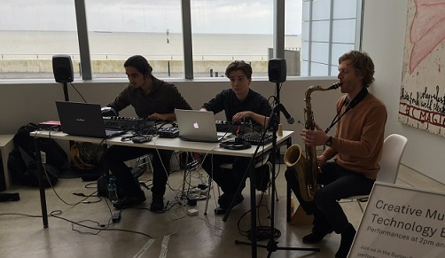

Turner Contemporary Gig
This performance was part of the Cretive Music Tech Ensemble, orchestrated by Sam Salem.
My ensemble partner Nick Galley, Sam Salem, jazz saxophonist Robert Stillman and I were invited to perform at the Turner Contemporary
in Margate in the main entrance hall. The set consisted of Robert improvising into a microphone where the audio was fed into both laptops.
Nick performed live processing upon the recieved sound and I sampled Robert's playing, placing each sample into a prebuilt
instrument within Ableton Live. I used an app call Lemur on a touch tablet to allow more gestural control over said instruments.